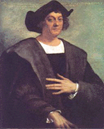

Kristof Kolomb (1451-1506)

Kendisi hariç, çoðu insan tarafýndan Amerika'yý keþfettiði kabul edilen ünlü denizcidir. Keþiflerle birlikte baþlayan koloniler kurma ve buralardaki zenginlikleri Batýya taþýma hýz kazanmýþ, dolayýsýyla Avrupa tarihinde çok önemli geliþmelerin olmasýnda onun da payý olmuþtur. Kendisinin de dahliyle, keþfedilen yerlerde yaþayan yerlilere karþý uygulanan vahþet, çok sayýda insanýn ve kültürün yok olmasýný netice vermiþtir. Dört büyük deniz seyahati gerçekleþtirmiþ ve Amerika sahillerini boydan boya geçmiþ olmasýna raðmen, buranýn yeni bir kýta olduðunun farkýna varamamýþ ve Hindistan'a ulaþma gayesini sürdürmüþtür. Özellikle çocukluðu ve son yýllarý olmak üzere, büyük sýkýntýlar içinde yaþamýþtýr. Risale-i Nur'da "Kolomb-u Zîfünûn" olarak ismi zikredilmektedir.Kristof Kolomb, 1451 yýlýnda Ýtalya'nýn Cenova kentinde, dokumacýlýk iþinde çalýþan ve yoksul olan bir ailenin çocuðu olarak dünyaya geldi. Çocukluðu ve gençliði hakkýnda fazla bilgi mevcut deðildir. Bu tarihlerde Cenova Avrupa'nýn en iþlek limanlarýndan birisi idi. Burada bulunan tüccarlar, bir çok ülke ile ticari faaliyetleri yerine getiriyorlardý. Karayoluyla Hindistan ve Uzakdoðu'dan gelen mallar alýnýp satýlýyor ve diðer Avrupa ülkelerine ulaþtýrýlýyordu. Denizciliðe meraký olan Kolomb, okuduðu eser ve anýlarýn da etkisiyle gizemli deniz yolculuðuna daha fazla ilgi duymaya baþladý. Denizciliði ne þekilde ve kimlerden öðrendiði hususunda bilgi yoktur. Bu konuda kendisi de son derece ketum davranmýþ ve bilgi vermemiþtir. Korsanlarla geçirdiði yýllarý, amacýný gerçekleþtirmesine engel teþkil eder korkusuyla açýklamaktan kaçýnmýþtýr.
Kolomb, gençliðinde doðu Akdeniz'e bir yolculuk yapma fýrsatý buldu. Bu yolculuðu sýrasýnda baharat ve ipek ticaretinin nasýl yapýldýðý hususunda bilgi edindi. Bu deniz yolculuðunu müteakiben Ýngiltere ve Ýzlanda'ya da gittiði nakledilmektedir. Yaptýðý bu deniz yolculuðu dönüþünde Portekiz'in Lizbon þehrine geldi ve buraya yerleþti. 1479 yýlýnda soylu bir kadýnla evlendi. Kayýnpederinin valilik yaptýðý Porto Santo adasýnda oturdu. Bu tarihlerde dünyanýn dümdüz olduðu þeklindeki düþünce hâlâ genel kabul görmekte idi. Kolomb ise dünyanýn küre biçiminde olduðunu düþünüyordu. Bilgisini pekiþtirmek için eski haritalarý inceledi. Yeni haritalarýn çiziminde de çalýþtý. Edindiði bilgilere göre, sürekli batýya doðru hareket ettiði takdirde Hindistan'a ve Uzakdoðu'ya ulaþabileceðine inanýyordu.
Kolomb, tasarladýðý deniz seyahatini gerçekleþtirmek ve gerekli maddi desteði saðlamak için 1485 tarihinde Portekiz kralýna müracaat etti. Ancak, isteði kabul edilmedi. Bunun üzerine Portekiz'den ayrýlarak Ýspanya'ya geçti. 1486 yýlýnda Ýspanya kraliçesine talepte bulundu. Ýsteði yerine getirilmediði gibi kesin bir cevap da verilmedi. Talebi reddedilmemekle beraber, ancak altý yýl sonra karþýlýk buldu. Bu bekleme döneminde Ýngiltere ve Fransa krallarýna yaptýðý müracaattan da bir netice alamadý. Ýspanya krallýðý para vermek suretiyle seyahatini desteklemeyi kabul ettiðini kendisine bildirdi. Bu zorlu yolculuk için denizci bulmakta büyük sýkýntý çekildi. Denizcilerinin büyük bir bölümü cezaevlerinden toplatýlan mahkumlardan teþkil edildi.
Kolomb, deniz yolculuðuna 3 Aðustos 1492'de baþladý. Yolculuðun uzun sürmesi tayfalarýn huzursuzlaþmalarýna sebep oldu. Tayfalarý yatýþtýrmak amacýyla kat edilen mesafeyi olduðundan fazla gösterdi. 12 Ekim'de Bahamalar'daki San Salvador adalarýna ulaþýldý. Altýn peþinde olan Kolomb, Küba ve Haiti'yi keþfetti. Hindistan'a iyice yaklaþtýðýný sandýðý için, keþfedilen yerlere Hint adalarý adý verildi. Gemilerinden birisi olan Santa Maria battý. Bu gemide bulunan mürettebatýn bir sonraki seferi beklemeleri kararlaþtýrýldý. 16 Ocak 1493'te dönüþ yolculuðu baþladý. Beraberinde papaðanlarý, altýn, silah ve tutsak aldýðý yerlileri de götürdü. Dönüþü ile birlikte bir anda þöhreti arttý. Daha önce bulamadýðý desteði bundan sonra buldu. Çok daha büyük bir hazýrlýk için gerekli yardýmý gördü. Çok sayýdaki gemi ve mürettebatla (17 gemi ve 1200'den fazla mürettebat) 25 Eylül 1493'te tekrar yola çýktý. Önce Dominik'e ulaþýldý. Akabinde Antil Adalarý dolaþýldý. Daha önce arkadaþlarýný býraktýklarý yere vardýklarýnda, söz konusu kiþilerin kötü davranýþlarýndan ötürü yerliler tarafýndan kovulduklarýný gördüler. Onlar da yerlilere çok kötü davrandýlar. Bu keþiflerle birlikte koloniler kurarak yerleþmeye baþlayan Batýlýlarýn yerli halka karþý yaptýklarý zulüm had safhaya ulaþtý. 250 bin olan yerli nüfus birkaç yýl sonra 60 bin, 60-70 yýl sonra da 500 kiþinin altýna düþtü. Kardeþi Bartolomeo'yu yerine býrakarak 1496 yýlýnda Ýspanya'ya geri döndü.
Kolomb, 30 Mayýs 1498'de üçüncü yolculuðuna çýktý. Bu kez daha da güneye doðru ilerleyerek Venezüella yakýnlarýnda bulunan Trinidad adasýný keþfetti. Akabinde Orinoko Irmaðýnýn aðzýna gelerek Güney Amerika kýyýlarýna ulaþtý. Koloniler kurmak suretiyle yerleþtikleri adalarda ayaklanmalar giderek arttý. Kolomb ve kardeþi ayaklanmalarý bastýrmak için çok sert davranarak yerlileri idam ettiler. Bu davranýþlarý kendilerine karþý olan saygýnlýðýn giderek azalmasýna sebep oldu. Ýspanya'dan gönderilen vali, Kolomb ve kardeþini zincirleyerek Ýspanya'ya götürdü. Mallarýna el konuldu. Ýspanya kralý Ferdinand ve kraliçe Ýsabella, kurulan koloninin Kolomb tarafýndan idare edilemeyeceðine karar verdiler. Koloniye yeni bir vali tayin ettiler. Kolomb'a da bir kez daha seyahat etmesi için izin verdiler.
Kristof Kolomb 1492 yýlý sonlarýnda Küba'ya vardýktan sonra gördüðü manzara karþýsýnda; "bir çift gözün izleyebileceði en güzel yer" mealindeki sözleri sarf etti. Ancak, nerede olduðunu tam olarak bilemiyor ve dolayýsýyla ismini söyleyemiyordu. Hala Hindistan'a vardýðýný sanýyordu. Amerika'yý keþfetmiþ olmasýna raðmen, Ýspanya'nýn desteðiyle bu keþfi gerçekleþtirirken, bilerek veya bilmeyerek bir uygarlýðýn da yok edilmesine zemin hazýrlamýþ ve neticede, sevabýnýn mý, yoksa günahýnýn mý daha çok olduðu yorumlarýna zemin hazýrlamýþ olmaktaydý. Ama yine de bir çok insanýn yok edilmesindeki payý az deðildi.
Kolomb, 3 Nisan 1502'de bir kez daha yola çýktý. Hindistan'a daha kýsa yoldan ulaþmak ve yeni bir yol bulmak için Orta Amerika sahillerini dolaþtý. Ancak, Panama'dan Pasifik Okyanusunu keþfedemedi. Jamaika'da gemisi karaya oturdu. 1504 yýlýnda amacýna ulaþamayarak hayal kýrýklýðý içinde Ýspanya'ya geri döndü. Dönüþünde ilgi görmedi. 20 Mayýs 1506 yýlýnda dostlarý tarafýndan terkedilmiþ ve yoksul bir halde öldü.
Kolomb'un keþfi dolayýsýyla ismi zikredilirken, Risale-i Nur'da, fen bilimlerini bilen anlamýna gelen "Kolomb-u Zîfünûn" olarak kendisinden söz edilmektedir. Alemde kemale erme istek ve arzusunun varlýðýna iþaret eden Bediüzzaman, insanýn da alemin bir parçasý ve ferdi olmasý hasebiyle onda da bu arzu ve ilerleme meylinin mevcut olduðunu belirtmektedir. Bu meyil, fikirlerin birbiri üzerine eklenmesinden istifade edilerek neþv u nema bulur. Baþlangýcýndan itibaren ekilen bilgi tohumlarý zamanla büyür ve geliþir. Ulaþýlmasý imkânsýz gibi görülen, çok büyük sýkýntýlar ve çalýþmalar sonucu ulaþýlan bilgi ve deneyimler, zamanla sýradanlaþýr. Mesela, Amerika'nýn varlýðý bugün sýradan bilgi seviyesine düþmüþ olmasýna mukabil, birkaç asýr evvel bilinmezler arasýnda idi. Nitekim, Kolomb, günümüzde söz konusu seyahatini yapmýþ olsaydý, hiç de sahip olduðu þöhrete ulaþamayacaktý. Çünkü, bugün çok daha kolay, küçük bir gemi ve pusula yardýmý ile onun yapmýþ olduðu seyahati çok daha kolay yapmak mümkündür. (Muhakemat, s. 14)